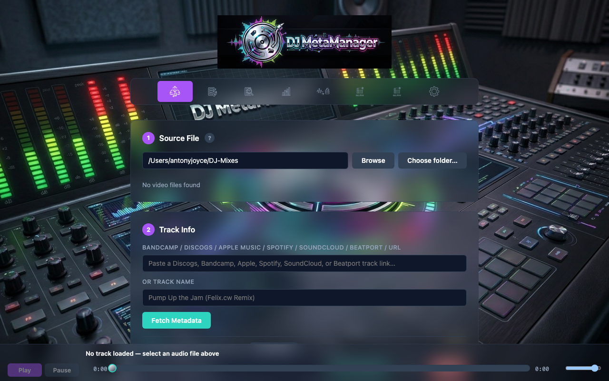
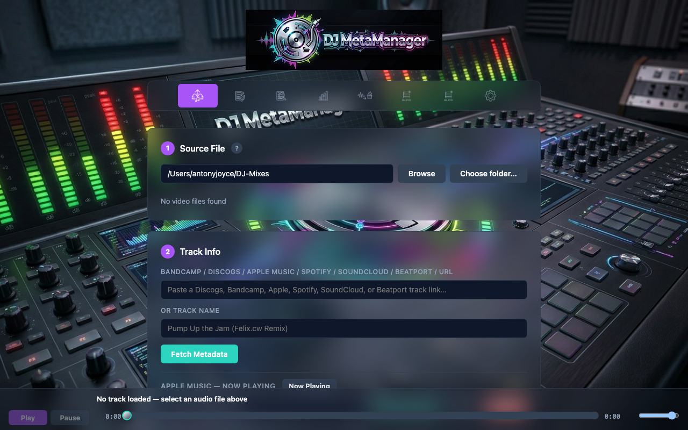
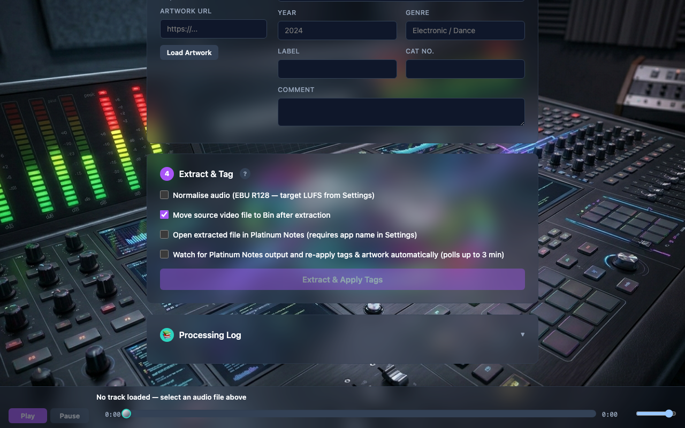

Extract workflow
The Extract tab is the primary path from video recordings (typically .mkv from OBS) to a single tagged audio file in your chosen format. Video is discarded; audio is analysed, optionally loudness-normalised, tagged, and copied to your destination folder.
Typical recording setup
Many users capture vinyl or mixer output through OBS Studio with a virtual audio device such as BlackHole on macOS. OBS often records MKV even when only audio matters. DJ MetaManager strips the audio stream and writes a clean library file.
- Recommended: 48 kHz sample rate in OBS if you target club playback systems.
- Lossless in-container codecs (e.g. FLAC inside MKV) preserve quality before extract.
Step-by-step
- Set source and destination in Settings (Extract can browse from the configured source).
- On Extract, list recordings and select a video file. Use Rename to rename a take in place, or Delete to move a bad take to the Finder Bin (macOS).
- Review integrated LUFS, true peak, and mean meters when enabled (healthy ranges are in the README). For long MKV recordings you can turn off automatic analysis under Settings → Extract tab: analyse .MKV audio levels; the UI shows a clear notice, and normalised extract still runs loudness measurement on the server when you extract.
- Optional: enable normalise for two-pass EBU R128 loudness to your Settings targets.
- Paste a track or release URL (Bandcamp, Discogs, Apple Music, Spotify, SoundCloud, Beatport track pages, or other supported pages) and fetch metadata. The source URL is stored in tags and the processing log for traceability.
- Run Extract. The app writes the output file, embeds artwork when available, and optionally moves the source recording to the Finder Bin.
- The audio preview bar at the bottom of every tab can stream a selected browser-playable file via the server; video-only selections (typical here) do not drive the player until you have an audio file selected.

03-extract-file-list-meters.png).
04-extract-metadata-url.png).Processing log and re-tagging
Each extract can create a processing log entry with metadata source type and URL. If you later run external tools (e.g. Platinum Notes) that rename files, you can use Re-tag workflows described in the README to re-apply log entries to files in a folder.

05-extract-processing-log.png).Platinum Notes integration (optional)
In Settings, set the exact macOS application name for Platinum Notes and the output suffix (e.g. _PN). From Extract you can open the extracted file in Platinum Notes and let the app watch for the derivative. When it appears, tags and artwork from the same log entry can be re-applied, and the processed file can be copied next to your library copy when applicable.
<title><suffix>.<ext> naming pattern. See the README for full detail.
Related chapters
Normalise for existing files; Fix Metadata for manual corrections; Reference for formats and tag fields.